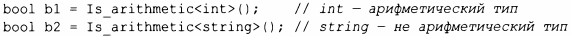
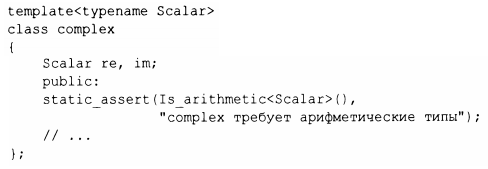

⇐13.9.1 iterator_traits 13.9.3 еnаblе_if⇒
13.9.2. Предикаты типов
В заголовочном файле <type_traits> стандартная библиотека предлагает простые функции типов, называемые предикатаrwи типов, которые отвечают на фундаментальные вопросы о типах. Например, я могу определить шаблонную функцию Is_arithmetic(), отвечающую на вопрос о том, является ли некоторый тип арифметическим:
Другими примерами являются is_class, is_pod, is_literal_type, has_virtual_destructor и is_base_of. Все они особенно полезны при написании шаблонов. Например:
Чтобы улучшить удобочитаемость по сравнению с непосредственным использованием стандартной библиотеки, я определил функцию типа:

Старые программы используют вместо скобок () непосредственно ::value, но я считаю, что это довольно уродливо и раскрывает детали реализации. (Стандарт С++ 17 позволяет получать булевы значения, добавляя суффикс v; например, is_arithmetic_v<T> является псевдонимом выражения is arithmetic<T>::value. - Примеч.ред.)